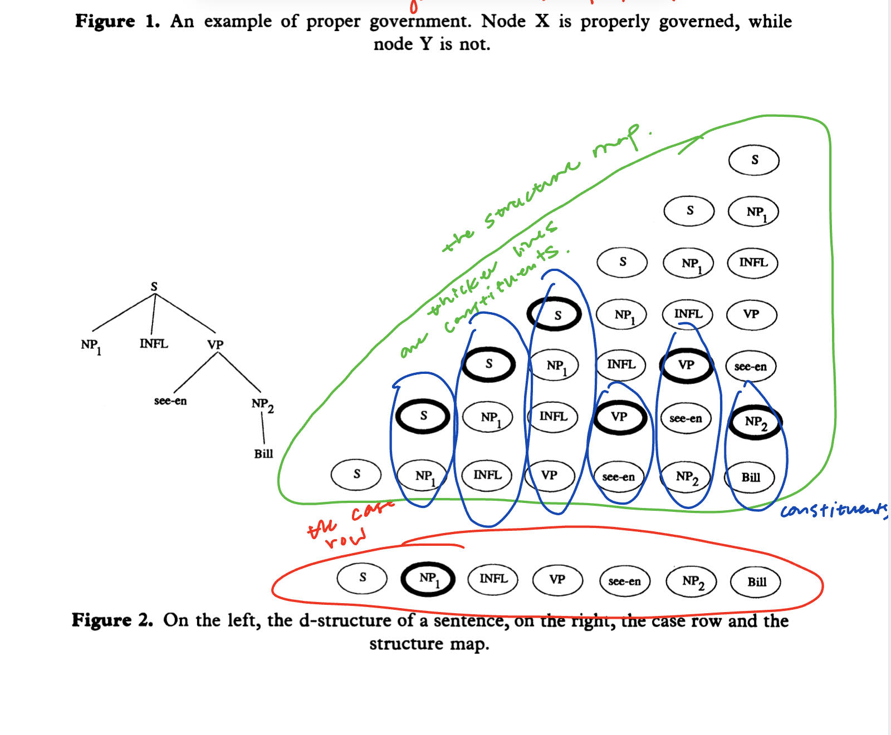
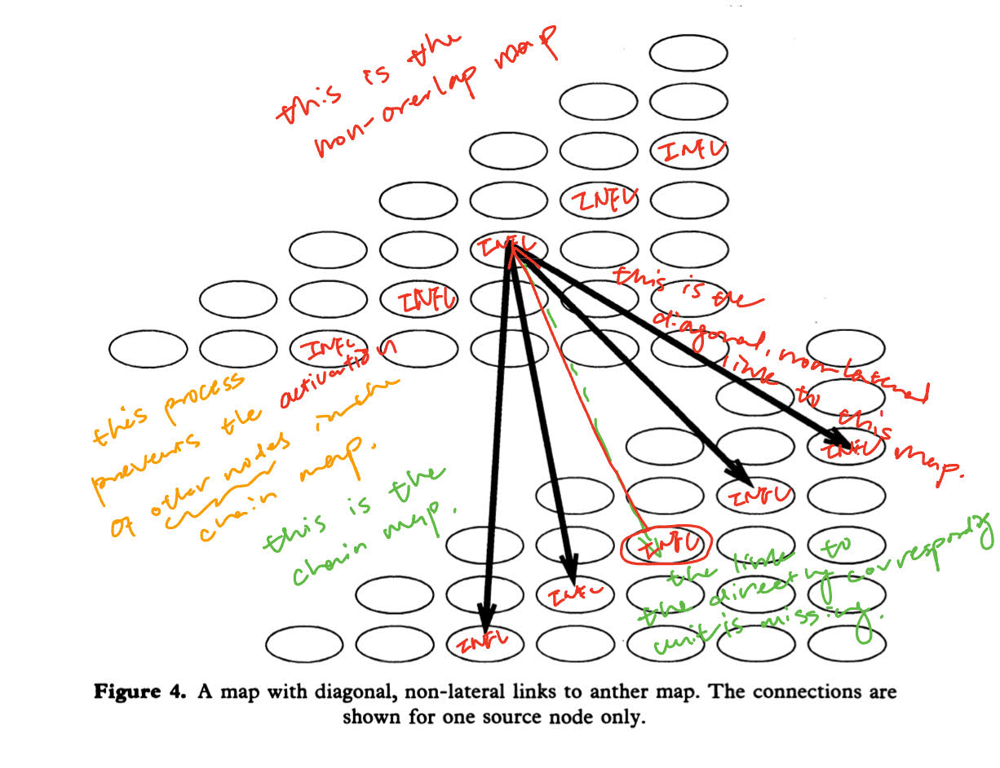
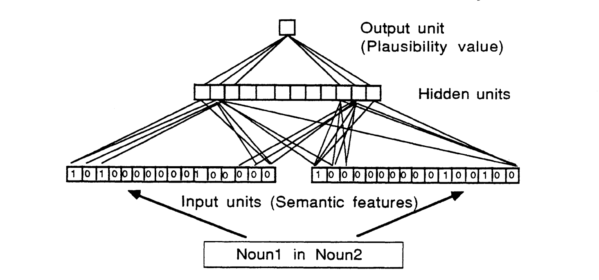
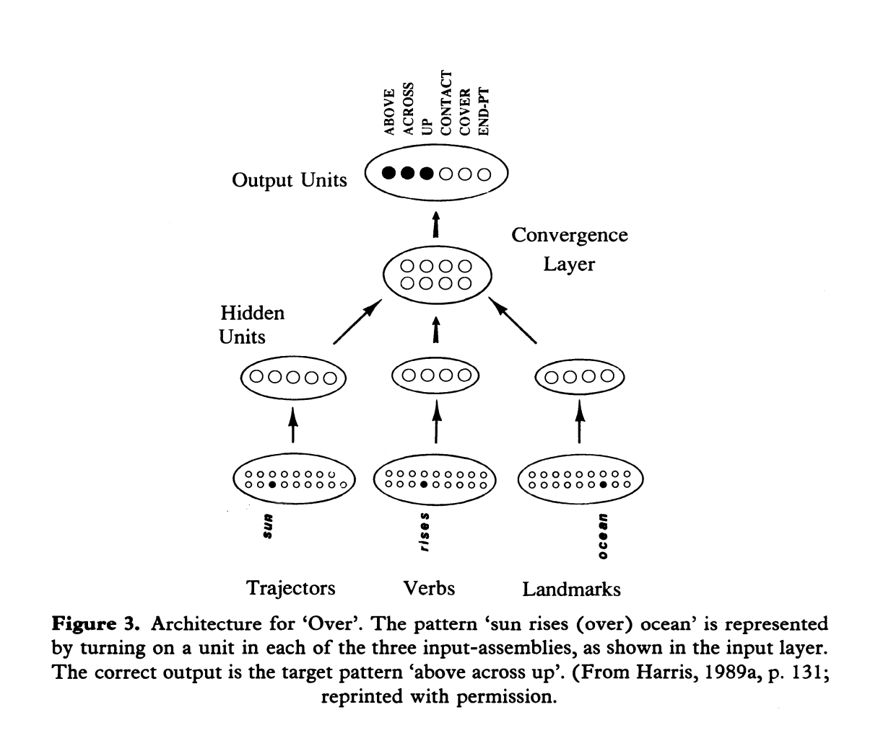
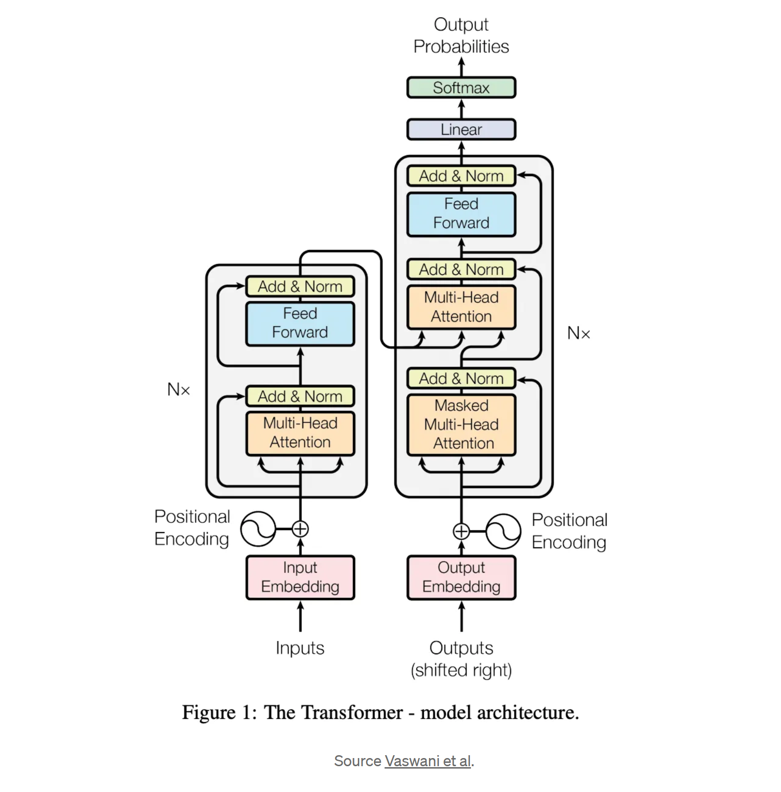

What Is Modern Natural Language Processing About?
To answer this major question, it's important to draw inference from some of the important concepts in psychology. The first one is The Language of Thought Hypothesis and the second one The Representational Theory of Mind.
The first one touches on the importance of how our brain has a schema when it comes to producing language of thought, or called Mentalese. The Representational Theory of Mind on the other hand touches on our cognitive abilities to be able to make conscious decisions, solve problems, and reason.
Above may be manifested in a natural language as propositional attitudes. The schema goes as,
X believes that p iff X believes that S which is a mental representation and p is the actual manifestation of S.
That being said, the language that we used to describe our mental experience is only a representation of what in actuality the thing is inside our brain. This representation could bear a semantic property, be it a denotation or a truth-condition.
Table of Contents
- What Does It Mean To Have A Mental Language?
- How Are The Above Premises Important to Establishing the Framework of Natural Language Processing?
- Connectionism and The Representational Theory of Mind Continued
- The Compositionality of Mental Representations Addressed in Syntactic Analysis of a Natural Language
- Addressing The Issues with Non-Autonomy Of Syntax And Non-compositionality of Semantics
- The Intuitive Imposition in Semantics
- Non-overlapping Mapping Mechanism: A Connectionism Approach To Representing Complex Phrasal/Syntactic Structures
- Simple Distributed Representations (Such As A Simple MLP Network) To Map Syntactic Structures.
- Statistical Semantics and NLP Techniques
- Extending to Large Language Models and Deep Neural Networks in the 20th Century
What Does It Mean To Have A Mental Language?
Continuing the discussion of LOTH or the The Language of Thought Hypothesis, again one can postulate that it's closely correlated with the mental representation (drawing reference from the Representational Theory of Mind and the current discussions around understanding how the brain actually works; at least w.r.t the folk psychology).
It confirms that Mentalese exists within the scope of research. Aside from the physical aspects (the basic ability to identify, match, and represent the objective and physical reality), researches of these "mental representations" strive to incorporate subjective and qualitative dimensions, for example, consciousness and propositional attitudes specifically borne out in the form of a natural language as feelings, beliefs, desires, intentions, and fears.
The exactness of a mental language or a mental state is yet unknown. However, in folk psychology, these propositional attitudes are a direct reflection and serve a distinctive function to these mental images, in case the locutionary intends that the proposition A* gets assigned to these mental states S.
This might be fundamental for inferential reasoning, assuming the importance of how it's tied to relevant actions. The mental representations S here are put into "boxes" (a "belief box" or a "desire box"). That being said,
Someone who believes S stands in a psychologically important relation to the proposition expressed by S.
So, to talk about the actualization of a mental image in such case, the process goes as,
The Manifestation of A Mental Representation
First, the occurrence where I have an intention of doing something;
And then second the enduring state which is reflected as my long standing belief of something.
With deductive reasoning and inference (I transition from believing* the premises to believing the conclusion) together as a package, the propositional attitudes reflect these mental images which are the direct objects and constitute the scope of a thought process.
Natural languages are compositional meaning that complex sentences are formed through simple linguistic expressions. In the same light, a mental language could be compositional and consist of symbols amenable to semantic analysis. This would be introduced as the COMP or The Compositionality of Mental Processes.
LOTH claims that mental states typically have constiuent structures. That said, the mental state of intending something bears weight and complexity on its own not including their propositional objects or mental representations.
Ancient LOTH proponents used syllogism and propositional logic to analyze the semantics of Mentalese. Current researchers instead use predicate calculus, which was established in the late 18th century and optimized in the 30s. The premise was that,
A Mentalese contains primitive words - including predicates, singular terms, and logical connectives - and these words combine to form complex sentences governed by something like the semantics of the predicate calculus.
Logical structure only constitutes partly the complex representations, accompanied with other non-sentential formats including graphs, maps, diagrams, etc. They could also be manifested as ideas and imagistic forms. In fact, logic plays no role in such constructions only loosely connected structures did.
Schematic mental maps in relation to actual concrete maps best describe these kinds of mental images and representations. Therefore, pluralism was adopted by some to analyze thoughts, including but not limited to those non-sentential formats mentioned above.
However illogical these perceptual mental representations are compositional and complex, and they also display systematicity.
Though, the mind could postulate an infinite amount of thoughts and displays productivity (which is another important attribute of Mentalese), but the important ones are qualified or vetted through propositional attitudes that are able to have an effect. Or intentional causation could only come about where there's an explicit representation.
In a nutshell, to discuss in more seriousness, it's important to distinguish sharply between mental representations and rules governing the manipulation of mental representations. Similarly applicable to deductive reasoning where we often follow rules of deductive inference without explicitly representing the rules. Or we often as native speakers of a language follow its inherent syntax without explicitly stating the rules that govern it.
Naturalizing Intentionality Through Hypothesis Formulation and Concept Acquisition in Language Learning and Understanding
This part of the discussion is very important as it's pertaining to how we acquire Mentalese.
A huge part of the NLP/NLU research is related to naturalizing the intentionality behind a language (discourse analysis, corpus linguistics, formal semantics, syntactic analysis, etc). This ties back to the understanding of concept acquisition, and the innateness of toddlers to be able to adopt new things into their Mentalese.
One approach is through hypothesis formulation in that,
Infants are thought to form hypotheses about the world based on their observations and experiences. Through interactions with their environment, infants test these hypotheses and update their understanding of the world accordingly. For example, when an infant observes objects falling to the ground, they may form a hypothesis about the concept of gravity and test it by dropping different objects to see if they fall.
The hypothesis formulation and model testing done around the argument has however suffered two logic fallacies: ad infinitum and the pain of circularity, as children could not possibly develop a meta-meta-language to explain a meta-language nor could they have the ability to represent something unless the concept is already known, which is through the required inductive reasoning in a hypothesis formulation about the denotation of Mentalese.
Therefore, it bears that there's no such a thing as concept learning. And the conclusion was that concepts are unlearned in fact they are innate.
In such a case, it's very important to explain what it means by understanding a natural language? The conclusion was that,
A Mentalese is a direct medium of the thought process and not the object of interpretation, as we face the conundrum of having to represent it through a meta-language which suffers the logic fallacy of ad infinitum; put differently, "we face the infinite regress of a meta-language". Therefore, it's not perceived or interpreted. One cannot say that they understood the mental language the same way as they understood a natural language.
similarly to words (lexical items in a natural language), we can hardly define what a primitive expression's semantic properties exactly are.
Though it's easy to illustrate the relations between complex expressions formed from these primitive expressions, researchers sought to create paradigms that could well capture the semantic properties of them.
One of the strategies was to adopt functionalism (where mind is the functional organization of the brain). Therefore, the effort of categorizing what exactly it means by saying "X A's that p iff there is a mental representation S such that X bears A* to S and S means that P" gets broken down into two steps,
1. to explain in naturalistically acceptable terms that it is to bear psychological relation A* to mental representation S.
2. to explain in naturalistically acceptable terms that it is for mental representation S to mean that p.Another strategy is by treating these mental processes as type-token relations.
On the Type-Token Relation of Mental Representations
e and e* are tokens of the same Mentalese type iff R(e,e). And individuated in neurological terms it becomes that e and e are the tokens of the same primitive Mentalese type iff e and e* are tokens of the same neural type.
This is the process of naturalizing intentionality and individuating it through pure neurology. However above schema faces a challenge as it could not address the issue of multiple realizability, as it is defined heterogeneously in the realm of neuroscience, physics, and biology.
In lieu of which, a functional definition is carried out and goes as,
e and e* are tokens of the same primitive Mentalese type iff e and e* have the same functional role.
The below strategy gains popularity as it facilitates the Turing style model treating mental processes as a "computational role" subscribing the "functional role" to Turing style computationalism formalism.
And there are two categories that represent such a "functional role":
💭 MOLECULAR vs HOLIST.
Molecular theory extracts the canonical or typical relations between symbols through demarcation; on the other hand, the holist is more fine-grained in the sense that every different type is tokened. In other words, no two entities will have the same mental processes, or
e and e* belong to the same primitive Mentalese type iff they have the same (canonical if adopted) functional role under MT and iff they have the same total functional role under HT.
To explain in simpler terms as I understood it, looking at a natural language say we have the simple term word and words in English serving as a basic unit or lexical item; they would belong to the same primitive type WORD as the same token under MT and different under HT.
However it's concerned under HT that it might have violated the publicity constraint as propositional attitudes are shareable. And in contemporary literature through the inferential judgement that in a natural language, there's a vague and arbitrary sense of denotation (The English word "cat" denotes cats, but could denote something had the linguistic convention presumes so), one can also conclude that in a Mentalese, such a case is applicable.
Yet, historical literature suggests an alternative view that addresses an distinction that Mentalese is essentially semantically permeated meaning that they are not arbitrary as a natural language is and at least to some extent they have a fixed denotation.
This view is confirmed by the fact that different from a natural language, their intrinsic attribute is schematic and typical, meaning that they are types (if one may ask what ensures such a fixed position?) Therefore, CAT in a Mentalese would have denoted cat by its inherent nature and this semantically permeated approach adopts a classificatory scheme that allows the tokens getting categorized adopt semantic values. Finally, the denotation individuation approach goes as,
e and e* are the same primitive types iff they bear the same denotation.
However, this approach also faces some challenge. First, it violates the original LOTH's aim to naturalize intentionality in non-representational computational models, as this approach does not take into account the formal-syntactic types manipulated during mental computation.
This may be carried out in the FCS or the formal-syntactic concept of computation's provided explanation of formalism and semantic integrity; which holds that mental computational is sensitive to syntax independent of semantics or mind is practically speaking a "syntactic machine".
On top of it, this approach merely prevents the formal-syntactic Mentalese types while executing a reduction in the naturalization of intentionality.
In a nutshell, above individuation theories might not be adequate to account for the entirety of LOTH. More investigation is needed.
How Are The Above Premises Important to Establishing the Framework of Natural Language Processing?
To answer this question, we might need to discuss the important researches done in the realm around the 80s to 90s. As we have mentioned in previous paragraphs of the scientists' attempts to address the issues with representing a Mentalese in the realm of cognitive science.
Around the 90s emerging researches under the name Connection Science has sparked a unique route to addressing issues with representation (e.g. distributed vs. localist representations, classical vs. uniquely connectionist representation, type/token vs. part/whole hierarchies).
As we have introduced in previous sections, together RTM + COMP + CTM (The Representational Theory of Mind, The Compositionality of Mental Processes, plus The Computational Theory of Mind) forges the LOTH. And our cognitive inferential systematicities provide the space for the above hypothesis to stand.
Here CTM is excluded in the discussion because we want to discuss current research in the field of NLP/NLU/NLG. Only RTM + COMP is included. This is the original spawning of a new school of LOTH or research into mental processes grounded in connectionism. However, we will talk about the importance researches grounded in symbolicism.
Connectionism and The Representational Theory of Mind Continued
In the 1980s, connectionism gained traction in various fields, including natural language processing, as an alternative to the Turing style computational model or the Computational Theory of Mind or the CTM. This break through is the very manifestation of the representational theory of mental processes.
the idea is that instead of treating the mental states as having memory access locations with a central processor and a bunch of strings and symbols ready to be manipulated, the connectionist approach treats them as more primitive.
That said, under such condition, there are activations of neurons or so called "weight units" distributed and connected across the system, functioning analogously to the real synapses to our brain.
These newer and modern systems were built in hope that they could emulate the actual brain activity and could appreciate that
brain states are representational, so a good explanatory model should be able to capture that; second, thought processes are productive and systematic, which is manifested in the ability to conduct inferential reasoning.
To accept this position, connectionism has to accept RTM + COMP. Eliminativist connectionists might completely reject this position, and on the other hand implementationist connectionism might accept it in order to endorse the Turing style computational model.
Some literature later debated around the necessity of commitment to productivity and systematicity of thoughts. Supporters still seek to illuminate the traditional style of computational system.
Another stream of objections go against the fact that the productivity and systematicity nature of language of thought had been greatly exaggerated. The last streak of objections posits that one can still create models that reflect the compositionality and the internal structures without adopting the Turing style model.
The connectionists contend that instead of a concatenated structure, distributed representations could well capture the integral parts of LOTH. However, doubt was raised around the idea that if we consider concatenative constituency structure is only one of the realizations of the productivity and systematicity of the LOTH, then these schools of neural models would still be considered as part of the classicism.
broadly speaking, classicists would appreciate the structural representations while the connectionists would appreciate the more distributed representations.
Connectionist models, based on neural networks, nonetheless offered an alternative to traditional symbolic or computational models, such as those associated with the Computational Theory of Mind (CTM). These connectionist models were often seen as more biologically plausible and capable of capturing complex, distributed patterns of information processing.
The Compositionality of Mental Representations Addressed in Syntactic Analysis of a Natural Language
In this section and the subsequent sections, I will go through the Chomskyan Transformation Grammar Theory to demonstrate how researchers address compositionality through symbolicism. The importance is that natural language modeling and understanding tasks often want to seek solutions that extract the underlying complex syntactic structure of a natural language. This is associated with the fact that natural languages display compositionality similar to a Mentalese.
The Schema of a Chomsky hierarchy is demonstrated below,
A simple introduction to the TG Theory and GB Law
Formally, a content-free phrase-structure grammar is a 4-tuple , where:
( N and ) are finite, disjoint alphabets of non-terminals and terminals respectively.
P is a finite set of productions of the form where and .
S is a distinguished symbol in N, known as the start symbol.
For stochastic grammars, each of the productions has an associated probability, with the constraint that the probabilities of all the RHSs for any given LHSs must sum to one.
It is often useful to allow more than one start symbol, perhaps one for each pattern class. The set of all possible strings derivable (denoted by ) from S is denoted , i.e. the language generated by , where a non-terminal can be rewritten in more than one way, we use the disjunction symbol '|', e.g. means .
Deep vs. Surface Phrasal Structure - below is an example of a "passive transformation" changing a phrase's deep structure by moving the phrase's noun phrase from object position to subject position. For example,
a. d-structure: [] INFL see-en BILL
b. s-structure: Bill INFL seen-en e
Here the letter e represents the empty category that fulfills the empty category principle constraint
Government Binding - essentially what we see in above example is that in GB there are two phases in generation:
1. will still require the phrase structure rules.
2. the change from d-structure to s-structure.The Empty Category Principle - which is the constraint that whenever there's an empty category left behind by some sort of motion forced by case-filtering needs to be properly governed.
D-Structure - the d-structure is the product of phrasal structural rules that are derived from X-bar syntax, which provides a template for the structure of phrases (NP, VP, etc).
Case Filtering - Case is a grammatical marking which is assigned to phrase with specific structural relationships to various lexical items, such as verbs.
The -Role - similar constraint is the -criterion. In addition to case, a verb assigns some -roles ('thematic roles' such as agent, patient, goal). The -criterion says that a chain must have one and only one -role attached to it.
Movement- - During transformation, the d-structure turns into the s-structure which reflects (more or less) the actual form of the generated sentence. This movement is constrained by restrictions on the positions, items moved, and other properties of a chain. This is very crucial to pay attention to if a language modeling task needs to done addressing such a movement.
ℹ️ Why is this important to bring up here?
Transformational grammar posits that the structure of sentences in natural language can be generated through a series of transformations applied to underlying structures. These transformations allow for the derivation of various surface forms from a single underlying representation, providing a systematic way to account for the diversity of sentences in a language.
Compositionality, on the other hand, refers to the principle that the meaning of complex expressions is determined by the meanings of their constituent parts and the rules used to combine them. In the context of natural language, compositionality suggests that the meaning of a sentence can be derived from the meanings of its individual words and the syntactic rules that govern their combination.
Addressing The Issues with Non-Autonomy Of Syntax And Non-compositionality of Semantics
The grammar of a language is conceived by cognitive linguistics to be a pair of utterances and their meanings, where 'meaning' is broadly conceived to encompass all evoked conceptualization, including communicative function and extralinguistic aspects of the speech act.
Form-meaning pairs (also called 'grammatical constructions' or 'constructional schemas') can be highly specific, as happens with idiosyncratic expressions whose conditions of form and usage must be learned on a case-by-case basis, or they can be schematizations over large numbers of individual pairings.
These constructional schemas are the fundamental descriptive and explanatory device in cognitive linguistics; discovering the principles which constrain regularities in the form-meaning pairs of a language is understood to be the goal of linguistic research.
Under this interpretation of a grammar, all grammatical forms have a conceptual basis, although often a highly abstract one. There is thus no clear separation between grammar, semantics, and pragmatics, since semantic and pragmatic structures are included in the constructional schemas.
One typical example will be to use "peripheral constructions" to cover idiosyncratic expressions like idioms and conventionalized expressions.
The Intuitive Imposition in Semantics
On the other hand, the non-compositionality of semantics indicate that the meaning of an utterance is the mental conceptualization it evokes.
Cognitive linguists emphasize the search for principles which will facilitate an explanation of the range of form-meaning pairs in a given language.
ℹ️ Why does a specific combinations of words evoke one particular schematic conception rather than another? Why are some word-combinations regarded as ill-formed? How can we describe this evoked conceptualization in a useful manner?
Traditional attempts to understand the meaning of natural language utterances have typically divided the problem into two parts:
(1) how can the meanings of words be characterized.
(2) how are word meanings combined to yield sentence meaning.The meaning of a word is a set of semantic features used to determine its real-world referent, and sentence meaning is an aggregation of these meanings;the meaning of bachelor would be equated with features such as [HUMAN, MALE. UNMARRIED]. This view has been beneficial in linguistic and psychological research, but has faced challenges such as identifying prime features for concrete nouns and some verbs, and polysemy.
Researchers have proposed viewing the composite parts of a word as rules, which can be fluid attributes that shift according to context. Cognitive categorization data in psychology suggests that the conditions on word meanings should be understood as 'preferences rules', operating according to constraints satisfaction and violation. While cognition is central to semantics, this approach is limited in that it's ignoring sentence-level integration.
💭 Two of the researches will be introduced to dive a little deeper in this part of the conversation. TL;DR here, one utilizes mapping mechanism to try to capture Chomskyan phenomenon and another uses a simple neural network back-propagation architecture to try to model the conceptual activation in the preposition 'over'.
Non-overlapping Mapping Mechanism: A Connectionism Approach To Representing Complex Phrasal/Syntactic Structures
This is another important attempt at bridging these two different schools of LOTH theory development together - the non-overlapping mapping mechanism (Rager and Berg, 1992). At a simpler level, a breath-first representation as a mapping was provided to capture the d-structure of a phrasal structure to a row and column representation with constituent parts highlighted (where the constituents preceding a constituent form the elements of the column above it as demonstrated in the graph above). This mapping also needs to satisfy the above constraints, which we will go into more depth in the subsequent sections.
A breakdown of such a structure in depth goes as,
Using Maps to Model Constraints on Move- Maps are either used for input and output or to enforce the structural constraints on the sentences. The input to the system consists of several rows representing different features of the constituents (-marking, case-marking, VP, NP, lexical-NP and maximal projection) and the structure map.
The structure map shows, for each constituent in the sentence, which other constituent is its parent (i.e. immediately dominates it) in the structure. This is indicated by activating the unit representing the parent in the column above the constituent in the map. On the left in above figure is the tree representation of the d-structure of the sentence "Bill was seen".
The map in this figure is the structure map, which is equivalent to the d-structure tree. The row is the case-marking row. Active units are indicated by the heavier lines.
The output of the system is the chain map. The chain map shows the chains created (if any) by movements in the transition from d-structure to s-structure. If a constituent began a chain, there will be an activated unit in the column above it to indicate the constituent which is the new location after the movement.
If there were intermediate steps in the movement, multiple units will be active in the column. From this map and the structure map, the s-structure of the sentence can be determined. The chain map of the passive movement from sentence (1) is given in blow figure. The map tells us that the children of the second NP are moved to be the children of the first NP, while a trace is left behind.
Most of the maps in the system are not used to represent sentence structure; rather, they are used to enforce the constraints on movement. They do this through their excitatory and inhibitory links to other maps.
The remainder of this section describes one of the use of maps to enforce the four constraints: the non-overlap constraint, the case filter, the -role, and the empty category principle.
| The non-overlap constraint |
|---|
| Says that chains may not overlap. Every unit in the chain map has an excitatory link to the corresponding unit in the non-overlap map. (This type of linking between the units in two maps is called lateral linking). |
| Thus, the units active in the chain map will activate their counterparts in the non-overlap map. The units in the non-overlap map will in turn have inhibitory diagonal, non-lateral links to their counterparts in the chain map. |
| In diagonal linking every unit in the source map is linked to its counter part in each column of the target (i.e. to the corresponding diagonal). |
| A diagonal, non-lateral connection is the same as a diagonal connection except that the link to the directly corresponding unit is absent. |
| The connections from an active unit in the non-overlap map to the chain map prevent the activation of any other node in the corresponding diagonal in the chain map, enforcing the constraint. (Nodes in the same diagonal represent the same syntactic marker and if two units both get activated and had moved to the same place, it will violate the non-overlap constraint). |
| chain map with activated units on the right and d-structure on the left |
|---|
|  |
| non-overlap constraints satisfactory map |
|---|
|  |
The resulting model is highly complex. However, the implementation and evaluation decision is far from arbitrary. In fact, it's highly regular and generalized to be applied to other example sentences (though not tested on wh-questions).
In the discussion section, it was noted that AI connectionist approaches seldom think of syntax as being constraint-based, they describe it in terms of high-level rules.
However, GB theory imposes constraints globally on resulting structures and can provide insight into ways to model syntax in connectionist systems. Therefore, this research serves as a steppingstone to more interesting approaches and discoveries.
In fact, a few papers accomplished in the 1980s put effort into addressing this RTM + COMP through coding the syntactic elements of the inputs at a higher level with a simple MLP neural network to train such a model and accomplish subsequent lower level parsing tasks.
Simple Distributed Representations (Such As A Simple MLP Network) To Map Syntactic Structures.
This section will introduce one of the many researches that has put in such an endeavour to dive deeper and make the connection happen. In the paper that has conducted Hybrid Noun Phrase Analysis, under section 3 Learning Semantic Prepositional Relationships in Distributed Connnectionist Networks, the net work was built as such that for each preposition there is one back-propagation network that determines the plausibility of the prepositional relationships (see below figure).
One network consists of three layers of units to cover the schema 'Sun (Trajector) rises-over (Locative-PREPOSITION) the sea (Landmark)'. The input layer consists of 32 binary units (value 0 and 1; and probably the earliest vectorization of words or word2vec) representing 15 features for each of the two nouns.
The single real-valued output unit determines whether the prepositional relationship is plausible (value 1) or implausible (value 0). Twelve real-valued hidden units encode the mapping from the input units to the output units from a training set. All levels in the back-propagation network are fully connected. The graph of such a simple network is demonstrated below.

Such a network was introduced to cover the conceptual experience and idiosyncrasy raised in prepositions, here the example used is OVER as in 'sun rises over the ocean'. Because of the polysemous nature of the preposition, through some visualized investigation, it was decided to assign three main categories of spacial relationships for over: the simple 'above', the 'above-cross', and the 'cover' relationship.
Inferring the intended relationship from a give over expression appears to involve constraint satisfaction: not all the component words in the utterance are compatible with all the major spatial meanings, and the interaction of these constraints typically results in the selection of a single meaning.
The second reason presented by the paper was as described above that to model the polysemies of over is to explore the parallels between the 'linguist's task of rule induction and the input-output mappings that back propagation networks can solve. This was one of the pioneer models built around the idea of using a connectionist approach to solve more structured syntactic problems.

The architecture of the network could be broken down as such,
The network was given the task of mapping input patterns of the form "trajector verb(over) landmark" as we have already demonstrated in previous sections. The above figure shows the entirety, including # layers, connections between layers, and the contents of the input and output layers.
The output layer. The output layer consists of six units, one for each of the three schemas, and three to indicate whether the landmark and trajector make 'contact', meaning whether if the path has an 'end-point' or 'upward' component.
The input layer. The input layer is reduced to only cover the necessary schema for the network, so a vocab of 18 trajectors, 15 verbs, and 15 landmarks. Also, notably no semantic information was given to the model of the sentence that could be constructed under the schema as a whole (represented in a localist fashion; means encoding each individual piece of information as a distinct and separate unit, rather than embedding it within a larger context or structure.
In the context of neural networks, this often involves representing each element of a set (such as words in a vocabulary or components of a schema) as its own distinct vector or activation). That being said, they were preprocessed as separate units (activated in the vector) in hope that the model could capture some independent inference.
The details introduced here is very important, as it's required to discuss how the model learning the patterns gets postulated. In the paper, it was described that in order for the model to use the same set of weighted connections to map a large number of input patterns to their target outputs, then the network would have to learn, from the distributional regularities in the mapping between trajector-verb-landmark combinations and their output features, that
some input items are similar to others in some contexts but not in other contexts.
For example, some hidden units might learn to adapt to the similarities between a plane and a car, and the differences between a plane and a person.
This architecture, in conclusion, had a relatively simple makeup in hope that the function of these hidden units (self-regulate, self-organize, and feature-detect) could be apparent, as they serve a specific functional role in the mapping from input to output layers (i.e. trajector role-specific hidden units will only receive input activated from the trajector vector).
It was done in this style in hope that some inherent properties of the units in these schemas could be well captured.
Statistical Semantics and NLP Techniques
Beginning at the end of the 1980s and continuing until the end of 1995, almost every aspect of natural language processing underwent a major transformation: the transition to statistical, corpus-based approaches (as indicated by two special issues on this topic published in the quarterly Computational Linguistics in 1993). This shift was made possible by the growing availability and volume of machine-readable text and speech data.
Statistical Natural Language Processing (NLP) challenges traditional computational linguistics views, revealing that ambiguities are too numerous and interrelated to be resolved by heuristic arbitration. Language phenomena need to be treated as stochastic, and distributional properties systematically exploited for reliable hypotheses.
This shift suggests that language and thinking are not only symbolic but also quantitative and probabilistic.
In all cases, the three main requirements below are the development of probabilistic models (aided by learning) to relate linguistic inputs to desired outputs, and the use of algorithms to assign labels or structures to previously invisible model inputs.
Modeling:
Generative vs. Discriminative Models: These models differ in how they learn and generate data. Generative models aim to understand the underlying distribution of the data, while discriminative models focus on learning the boundary between classes.
Parametric vs. Non-Parametric Models: Parametric models make assumptions about the form of the underlying distribution and have a fixed number of parameters, whereas non-parametric models adapt their complexity based on the amount of training data.
Learning from Data:
Maximum Likelihood Estimation: A method used to estimate the parameters of a statistical model by maximizing the likelihood function.
Maximum Entropy and Expectation Maximization: Techniques used for modeling complex data distributions and iteratively refining model parameters, respectively.
Supervised versus Unsupervised Learning: In supervised learning, models are trained on labeled data, while unsupervised learning involves discovering patterns or structures in unlabeled data.
Output Computation:
Dynamic Programming: A method for efficiently solving problems by breaking them down into simpler subproblems.
Unique Output vs. Distribution of Output: This refers to whether the model generates a single output or a distribution of possible outputs, which can be crucial depending on the application.
Different Kinds of Text Processing and Probabilistic Techniques Summarized
For the first two decades or so, the main goal of statistical NLP has been to assign tags, tag sequences, syntactic trees, or use statistical language translations as linguistic inputs to models trained on large corpora of observed linguistic usage.
More fully, the types of tasks addressed can be roughly grouped as follows (where additional keywords indicate typical applications):
Text and Document Categorization:
authorship, news categories, sentiment analysis;
Context Categorization of Selected Text:
lexical disambiguation, named entity recognition, multi-word expression recognition;
Sequence Tagging:
cell phones → acoustic features → phonemes → words → POS tags;
Structural Assignment of Sentences:
parsing, semantic role labeling, quantifier scoping;
Sentence Transduction:
machine translation, low-frequency computation;
Structural Assignment of Multi-Sentence Texts:
discourse relationships, recall, plan recognition;
Large-Scale Relational Extraction:
knowledge extraction, paraphrase and implication relations;
TF-IDF Normalization: In text classification, one common technique for normalizing word frequencies is TF-IDF (Term Frequency-Inverse Document Frequency). TF-IDF assigns weights to words based on their frequency in the document and their rarity across the entire corpus. Preprocessing steps such as removing stop words and punctuation are often applied before calculating TF-IDF scores to improve accuracy.
Bayesian Approach: A simple Bayesian approach to text classification assumes that each class generates independent feature values. The probability of observing a set of features given a class is modeled, and the class with the highest posterior probability is selected. While independence assumptions are commonly made between features, more sophisticated models can capture feature interactions for improved classification accuracy.
Sequence Models and HMMs: Sequence markers play a crucial role in text classification by influencing the classification of neighboring words. Generative sequence models like Hidden Markov Models (HMMs) are used to capture these dependencies. For tasks such as part-of-speech (POS) tagging, HMMs estimate the probability of observing a sequence of POS tags given a sequence of words, allowing for more accurate classification.
kNN Method and Decision Trees: The k-Nearest Neighbor (kNN) method assigns class labels based on the majority vote of the k nearest neighbors in the feature space. Decision trees use information theoretic techniques to select classes and branches, providing insight into important features. While decision trees tend to converge to a non-global optimum, this limitation can be mitigated by decision forests.
MaxEnt (Logistic Regression) and SVM: MaxEnt models, also known as Maximum Entropy models or polynomial logistic regression, handle continuous features and provide a flexible framework for classification. Support Vector Machines (SVMs) allow for the distinction of arbitrary class configurations by projecting original class vectors into a higher-dimensional space where classes are linearly divisible. SVMs are mediated by a kernel function, which measures similarity between pairs of vectors, but they do not expand the classification criteria.
In summary, each method for text classification has its advantages and disadvantages, depending on factors such as parameter selection, probabilistic model development, and the characteristics of the dataset. Understanding the strengths and weaknesses of each method is crucial for selecting the most appropriate technique for a given NLP task.
Extending to Large Language Models and Deep Neural Networks in the 20th Century
We have talked so much about the statistical methods in dealing with natural language processing tasks. With respect to parsing, there's also the development of different neural networks (GAN, ANN, RNNs, etc). Traditionally recurrent neural networks and their variants have been used extensively for Natural Language Processing problems. In recent years, transformers have outperformed most RNN models. Before looking at transformers, let's first introduce recurrent neural networks, how they work, and where they fall behind.
Recurrent Neural Networks (RNN) operate on sequential data, including time-series data and language translation. Recurrent neural networks come in several forms.
Vector to Sequence:
takes in a vector and output a sequence of any length.
Sequence to Vector:
accepts a sequence as input and output a vector (frequently
used for semantic analysis).
Sequence To Sequence:
Models take one sequence as input and produce another sequence
(mostly used for machine translation).The Encoder-Decoder Architecture
All of the information from the input sentence will be summarized by encoders, and the decoder will use the encoder's output to produce the desired output. The encoder's final state transmits information needed to begin decoding. The decoder calculates a new hidden state and word using the previous state and the output. Both the encoder and decoder layers employ a number of RNNs.
But there are drawbacks to recurrent neural networks.
First off, they take a long time to train—extremely long time—and frequently we have to cut training short using methods like truncated back propagation in time.
Second, and more frequently, RNNs have disappearing and ballooning gradient issues. The information at the beginning of the sentence is lost when used to solve NLP issues.
💭 In a separate blog, these different architectures will be introduced in more detail.
Attention Is All You Need
To address some of the issues with conventional RNNs and LSTMs, an attention mechanism was introduced to them. The context vector, which contains the weighted sum of each hidden state in the encoder, served as the basis for the attention mechanism.
The context vector describes the relationship between the global input sequence and the decoder's current state. While the attention method addressed some of the RNN's intrinsic problems, we were still feeding words one at a time and processing them sequentially, which prevented us from using the parallel processing capabilities of modern hardware.
Self-Attention, or how each word in a sequence is related to other words in the same sequence, is the main emphasis of the multi-headed attention block. An attention vector created within the attention block serves as a representation for the self-attention. The goal is to identify the contextual connections between the sentence's words.
ℹ️ How does that function? By using the scaled dot products, we may determine the relationship between two vectors.
| The Transformer Model Architecture |
|---|
|  |
The mathematical dot product determines how similar two vectors are. In conclusion, two vectors have no correlation if the dot product is 0 and are tightly associated if the dot product is 1 (or -1 in the case of negative correlation).
Our transformer model calculates the attention using a scaled dot-product function. The entire model architecture will be detailed in a separate blog, and here it's only introduced briefly to support our discussion. Also other model extensions will be introduced as well such as BERT, GPT, Elmo, CNN, LSTM, VAE, GAN, etc.
In A Nutshell
The traditional view of language understanding emphasizes the explicit use of syntactic, semantic, pragmatic, and world knowledge in deriving meaning, rather than probabilistic methods. It suggests that non-probabilistic formulations are crucial for language understanding and use, and that ambiguity resolution can be achieved through procedures that elaborate on heuristics to facilitate syntactic and semantic interpretations.
From a philosophical point of view, this shift is important, not just a practical one: it suggests that traditional thinking about language may rely too much on introspection. The limitations of introspection are that very little of what happens in our brains as we understand or think about language is approached consciously.
We consciously register the results of our understanding and thinking, apparently in symbolic form, but not in the process of understanding and thinking itself; and these symbolic abstractions, which to some extent lack a quantitative or probabilistic dimension, can lead us to assume that the underlying processing is also non-quantitative. But the success of statistical NLP, as well as recent developments in cognitive science has argued that language and thought are not only symbolic, but deeply quantitative, and especially probabilistic.
It was also stimulated by the growing recognition of the distributional nature of language, the emergence of powerful new statistical-based learning methods, and the expectation that these techniques could overcome the scalability issues that had plagued computational linguistics and, more generally, AI from its early days.
The corpus-based approach has indeed been quite successful in producing comprehensive, moderately accurate speech recognizers, part-of-speech (POS) taggers, parsers for learned probabilistic phrase-structure grammars, and even MT and text-based QA systems and summarization systems. However, semantic processing has been restricted to rather shallow aspects, such as extraction of specific data concerning specific kinds of events from text or extraction of clusters of argument types, relational tuples, or paraphrase sets from text corpora.
Currently, the corpus-based, statistical approaches are still dominant, but there appears to be a growing movement towards integration of formal logical approaches to language with corpus-based statistical approaches in order to achieve deeper understanding and more intelligent behavior in language comprehension and dialogue systems. There are also efforts to combine connectionist and neural-net approaches with symbolic and logical ones.
References
Schubert, Lenhart, "Computational Linguistics", The Stanford Encyclopedia of Philosophy (Spring 2020 Edition), Edward N. Zalta (ed.)
Muntilde;oz, Eduardo. “Attention Is All You Need: Discovering the Transformer Paper.” Medium, Towards Data Science, 11 Feb. 2021, towardsdatascience.com/attention-is-all-you-need-discovering-the-transformer-paper-73e5ff5e0634.
Catherine L. Harris (Auth.), Noel Sharkey (Eds.). (n.d.). Connectionist Natural Language Processing Readings from Connection Science-Springer Netherlands.
Rescorla, Michael, "The Language of Thought Hypothesis", The Stanford Encyclopedia of Philosophy (Winter 2023 Edition), Edward N. Zalta & Uri Nodelman (eds.), https://plato.stanford.edu/archives/win2023/entries/language-thought.